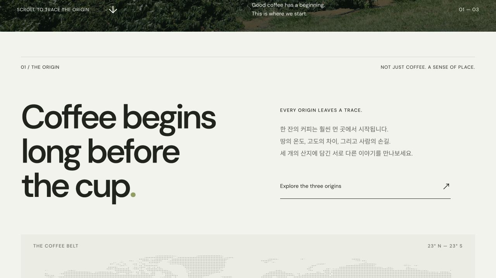
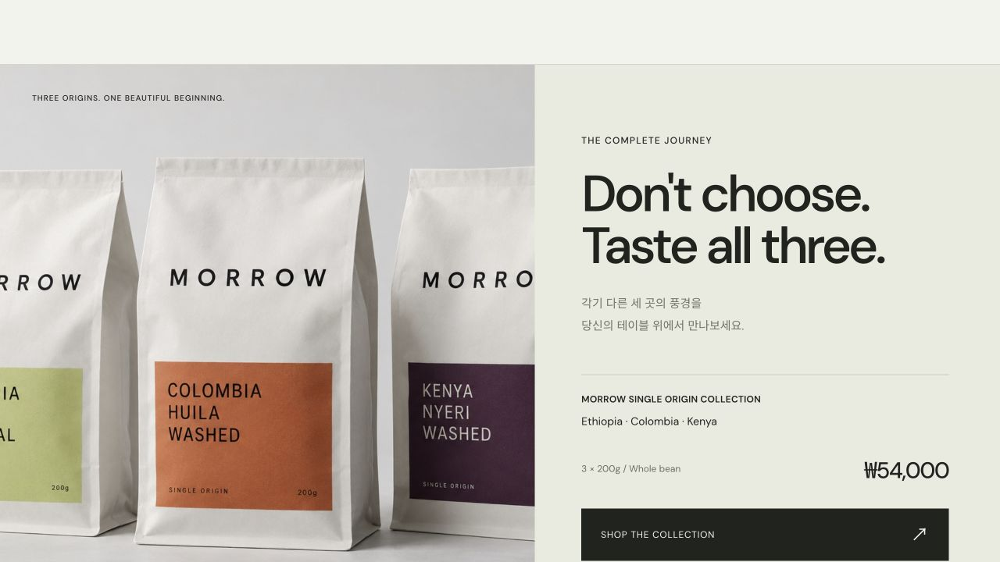

산지에서 시작하는 첫인상
커피 농장의 풍경을 첫 화면 가득 배치하고, 그 위에 짧고 큰 문장을 얹었습니다. 제품을 보기 전에 커피가 시작되는 장소를 먼저 만나도록 구성했습니다.
모로우 — 커피의 산지에서 한 잔의 일상으로 이어지는 브랜드 이야기
COFFEE / LANDING PAGE
모로우은 바스크 치즈케이크를 소개하는 디저트 브랜드 랜딩 페이지입니다. 케이크의 질감이 돋보이는 히어로와 제품 라인업, 만드는 사람의 이야기, 리뷰, 배송·픽업 안내를 순서대로 담았습니다.
커피 농장의 풍경을 첫 화면 가득 배치하고, 그 위에 짧고 큰 문장을 얹었습니다. 제품을 보기 전에 커피가 시작되는 장소를 먼저 만나도록 구성했습니다.
지도와 산지별 카드로 에티오피아, 콜롬비아, 케냐의 차이를 보여줍니다. 향미 섹션에서는 탭을 전환하며 과일과 꽃의 이미지로 각 커피의 인상을 비교할 수 있습니다.
수확부터 한 잔이 되기까지의 과정을 따라간 뒤 취향별 원두와 컬렉션을 소개합니다. 산지의 이야기를 읽는 흐름이 제품을 고르는 단계까지 이어지도록 했습니다.

